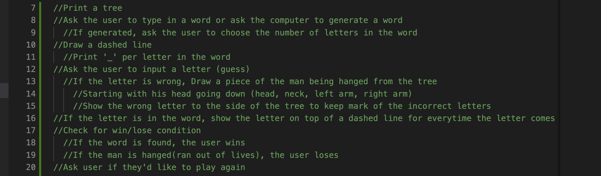
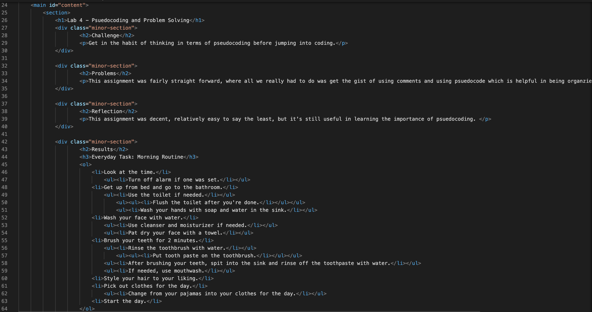
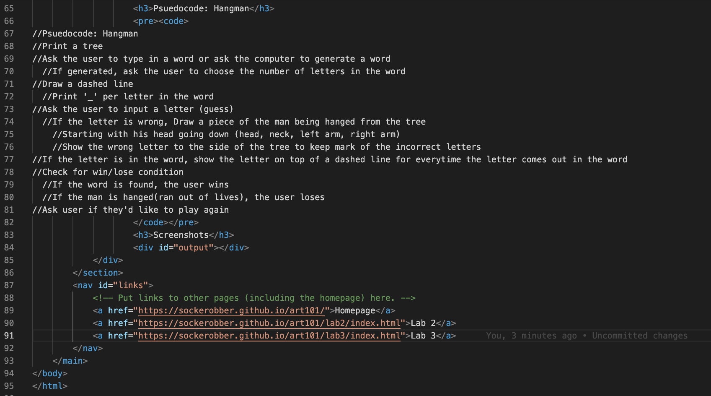

Lab 4 - Pseudocoding and Problem Solving
Challenge
Get in the habit of thinking in terms of pseudocoding before jumping into coding.
Problems
This assignment was fairly straight forward, where all we really had to do was get the gist of using comments and using psuedocode which is helpful in being organzied and on top of what you have to code.
Reflection
This assignment was decent, relatively easy to say the least, but it's still useful in learning the importance of psuedocoding.
Results
Everyday Task: Morning Routine
- Look at the time.
- Turn off alarm if one was set.
- Get up from bed and go to the bathroom.
- Use the toilet if needed.
- Flush the toilet after you're done.
- Wash your hands with soap and water in the sink.
- Wash your face with water.
- Use cleanser and moisturizer if needed.
- Pat dry your face with a towel.
- Brush your teeth for 2 minutes.
- Rinse the toothbrush with water.
- Put tooth paste on the toothbrush.
- After brushing your teeth, spit into the sink and rinse off the toothpaste with water.
- If needed, use mouthwash.
- Style your hair to your liking.
- Pick out clothes for the day.
- Change from your pajamas into your clothes for the day.
- Start the day.
Pseudocode: Hangman
//Pseudocode: Hangman
//Print a tree
//Ask the user to type in a word or ask the computer to generate a word
//If generated, ask the user to choose the number of letters in the word
//Draw a dashed line
//Print '_' per letter in the word
//Ask the user to input a letter (guess)
//If the letter is wrong, Draw a piece of the man being hanged from the tree
//Starting with his head going down (head, neck, left arm, right arm)
//Show the wrong letter to the side of the tree to keep mark of the incorrect letters
//If the letter is in the word, show the letter on top of a dashed line for everytime the letter comes out in the word
//Check for win/lose condition
//If the word is found, the user wins
//If the man is hanged(ran out of lives), the user loses
//Ask user if they'd like to play again
Screenshots

Javascript file including pseudocode of hangman.
First half of the html file for this page.
Second half of html file for this page.